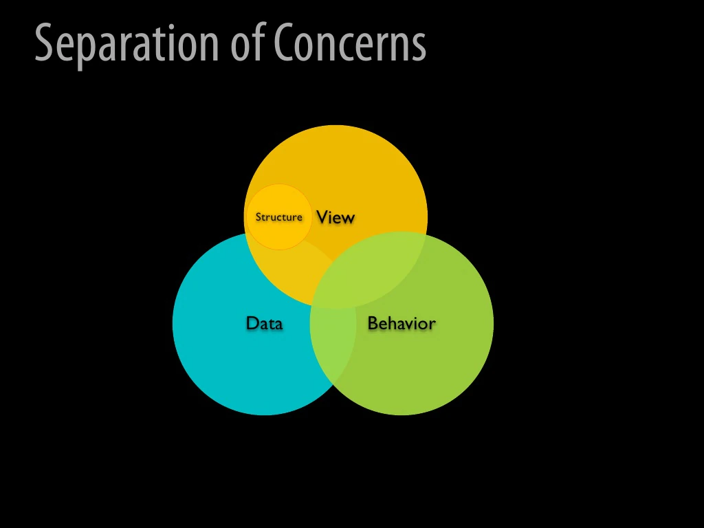

Seperation of concerns:
Separation of concerns is a software architecture design pattern/principle for separating an application into distinct sections, so each section addresses a separate concern. At its essence, Separation of concerns is about order.
- Seperation of Concerns for Calculator Program
The Seperation of Concerns concept is used in the Calculator program in such a way that the class calculator is divided into seperate classes like addition, subtraction, multiplication and division.
The class calculation in the program Calculation has the declaration of the object and the variables and the class is used as a parameters to the other classes like addition, subtraction, multiplication and division.
The program Calculator_test is used to write the custom test cases for the calculator.
The program Main is used to define the methods for the operations of the calculator.
The program Addition is used to perform the addition operation.
The program Subtraction is used to perform the subtraction operation.
The program Multiplication is used to perform the multiplication operation.
The program Division is used to perform the division operation.
THe program Calculator is used to declare the methods and print the end result of the calculator.
- Separation of concerns - advantages:
Separation of Concerns implemented in software architecture would have several advantages:
Lack of duplication and singularity of purpose of the individual components render the overall system easier to maintain.
The system becomes more stable as a byproduct of the increased maintainability.
The strategies required to ensure that each component only concerns itself with a single set of cohesive responsibilities often result in natural extensibility points.
The decoupling which results from requiring components to focus on a single purpose leads to components which are more easily reused in other systems, or different contexts within the same system.
The increase in maintainability and extensibility can have a major impact on the marketability and adoption rate of the system.